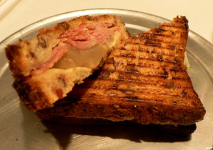
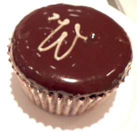

’wichcraft
After Wednesday wrote so evocatively about the chocolate cupcake at ’wichcraft, I made a mental note to stop in and try one some day. I was blessed with a morning off today, and I decided that since ’wichcraft is on my way to work anyway, I might as well stop for a proper lunch.

I’m so glad I did. These places are opening up all over town, and I hope they become popular enough to keep spreading. For a reasonable $6.50, I had grilled cheddar with smoked ham, mustard, and slices of pear on cranberry-pecan bread. This is my kind of sandwich: crispy on the outside, fully melted inside, with a delicious mix of salt and sweet. It was big enough for two people, and it tasted completely fresh. I’ll take mom here when she visits next month.

And the cupcake. I agree with Wednesday about the cupcake phase; it’s all been a total joke. Cupcake doesn’t mean what it used to: a soft little cake with creamy icing that made you dream of a glass of milk. The disgusting cupcakes from Magnolia Bakery would go better with a Diet Coke or a screwdriver. They are dry and unappetizing. While I can’t say that ’wichcraft’s is the best cupcake I’ve had in my life, it did seal my mouth together in that wonderful way that good cake can, when your tongue is stuck to the roof of your mouth and your lips to your teeth, and you’re afraid someone will come to ask you a question and you’ll have to speak. Wednesday: did you eat this thing in your office? I hope you closed the door and had them hold your calls.
(’wichcraft. 60 East 8th Street @ Broadway)
Comments
I thought proper lunches were among your job benefits!
“Wichcraft” is a great name for a sandwich shop, though, and that sounds like a wonderful sandwich you ate, if a tad high in cholesterol. That’s the trouble with New York; so many great places to eat, so little time. We don’t really have that problem in Pittsburgh.
They are among my job benefits; I just meant lunch instead of a cupcake.
Are you going to badger me about my cholesterol until I test again next year? Don’t you worry your pretty little head about it. You should see all the fruit I’ve been eating. And I stopped eating the full-fat Liberté yogurt, since one container had 20% of my daily cholesterol allowance. It’s all very stupid and annoying.
No, I’m not going to badger you about your cholesterol until you get tested again; I just think if you’re going to keep referring to it you should at least make an effort. Also, I selfishly want you to be abstemious between now and when I visit next month so we can binge on anything we want to eat and I won’t have to feel guilty about it!
Ha – YES! I did have to eat it surreptitiously and carefully even though it was so good I kind of just wanted to pop it in my mouth whole – it is a DELICATE thing. I’m glad you liked Wichcraft so much. You’ll have to try the white anchovy sandwich – it’s delicious. And white anchovies are totally different than the hairy little suckers in tins, in case you’re wondering… ;)
And I was wondering, Luisa. I can’t stand the hairy suckers, although I have them in my fridge and do like to chop them up finely and put them in things, which makes me feel very sophisticated. I’ll try your sandwich, maybe when mom is here in a few weeks. Perhaps you’ll join us?
Add a comment